Keep Still is Dogwood's debut album. Dogwood is Ethan Cantrell and friends. Ethan is a musician, a writer, a producer, and an engineer. He draws on his relationships and daily life, writing songs with all kinds of expression, emotion, confessions, inventive rhythms, melodies, and harmony. Keep Still was recorded at my home, in the summer of 2024. Overdubs took place all over Bloomington, up to release on April 3, 2025.
Slug Rug is Slug Rug's third release, the first with their current lineup. Slug Rug is Audrey and Keegan Priest, Reeder Vyain, Ethan Cantrell, and Drew Goforth. This three-track EP spans the breadth of Slug Rug's stylings. "Lighter Fluid" is catchy and upbeat, "Oh Man" is sprawling and massive, and "Teenage Symphony" closes the EP with a full-bodied beat. Slug Rug was recorded at my home and at Ali's — a friend. Slug Rug was released on March 28, 2025.
 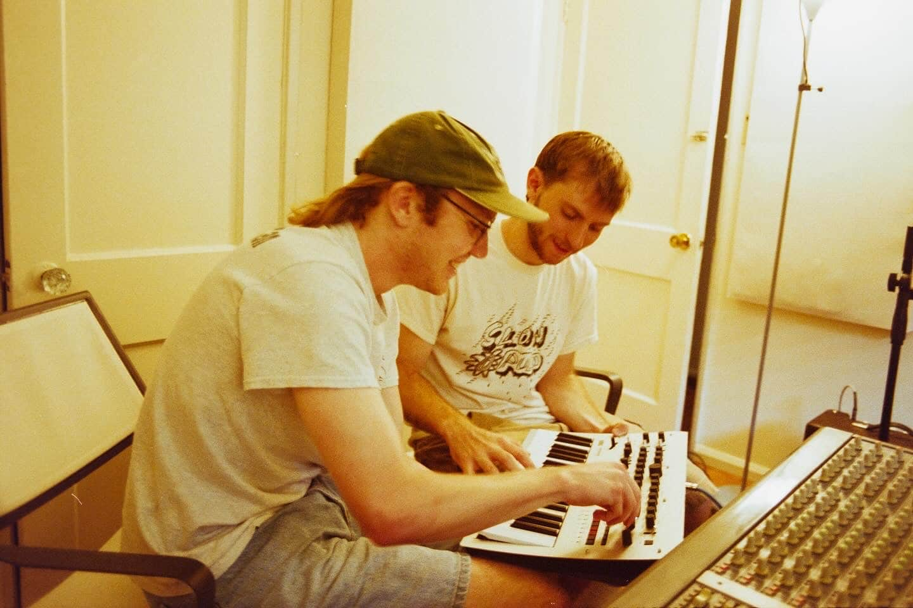
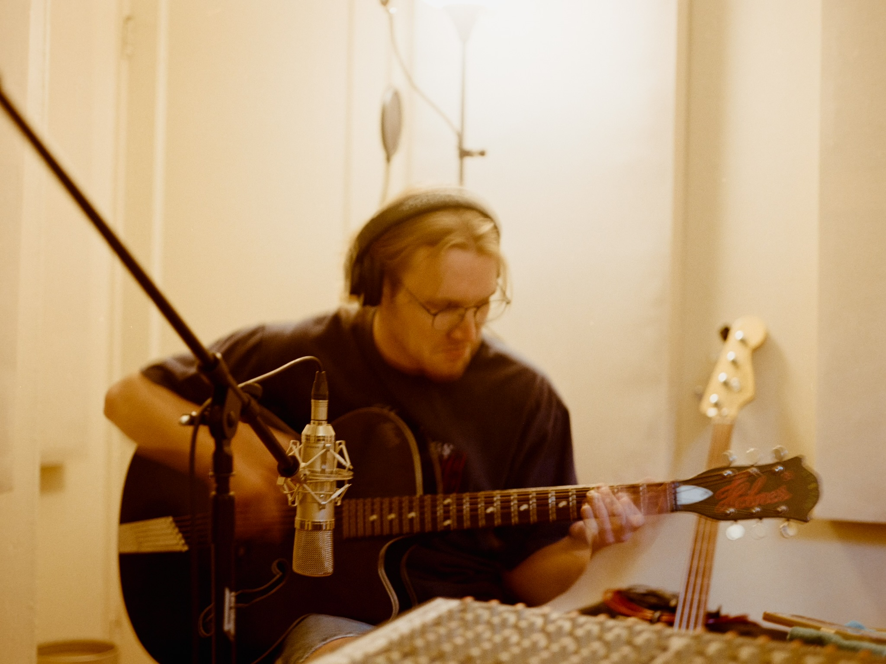
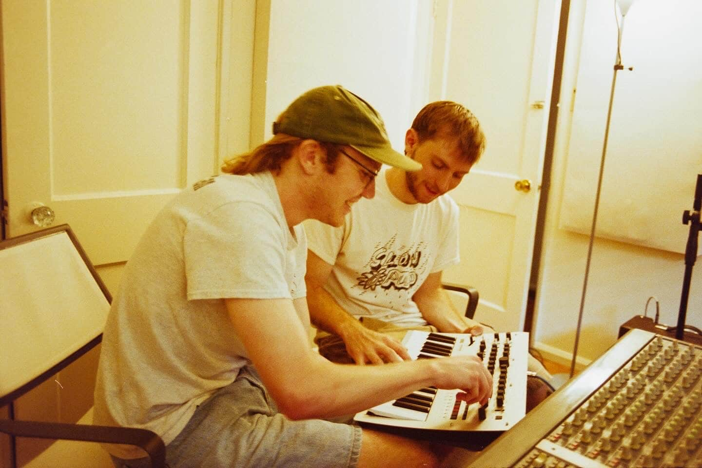
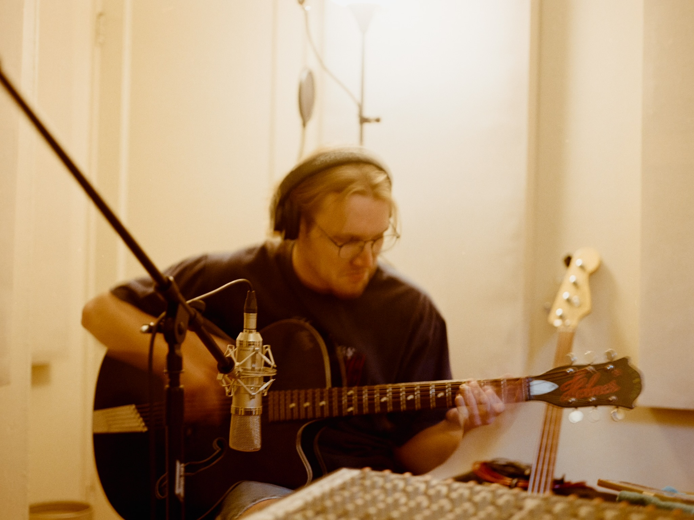


 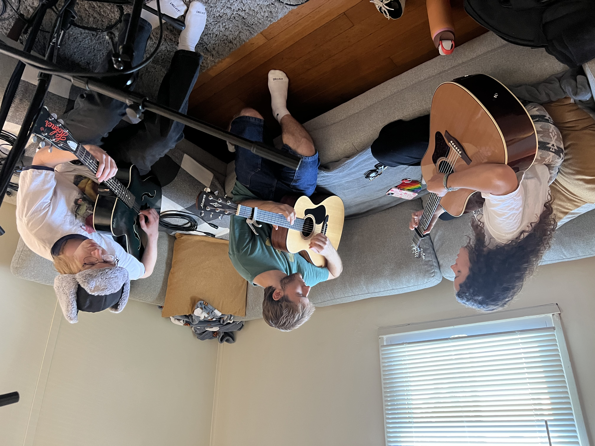
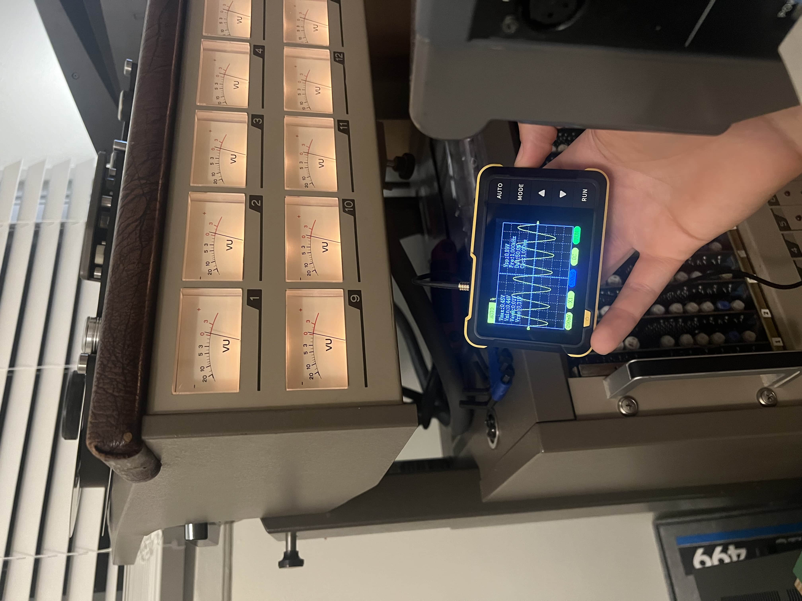
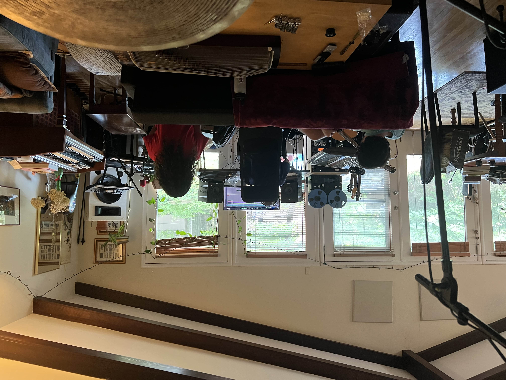
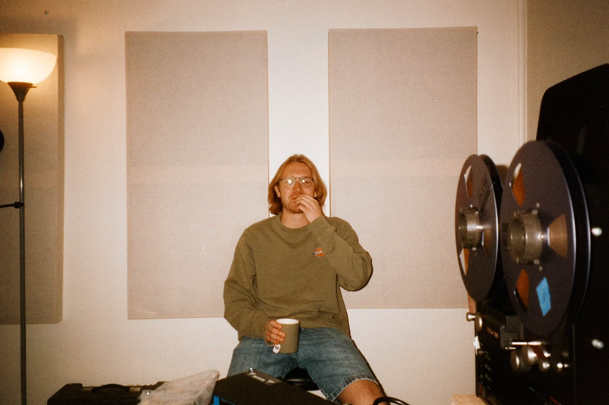
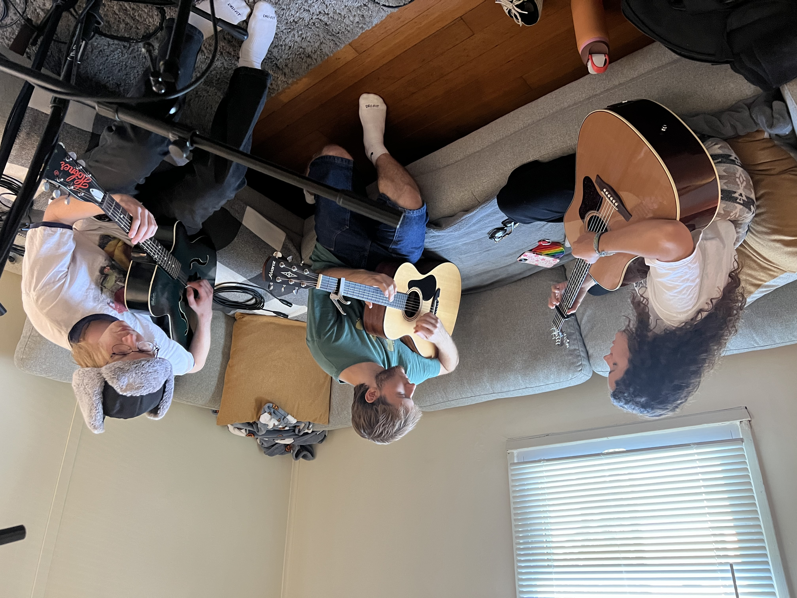
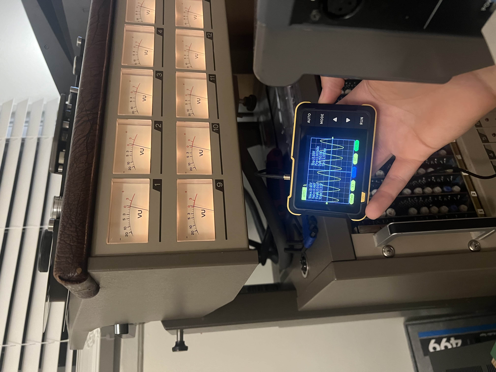
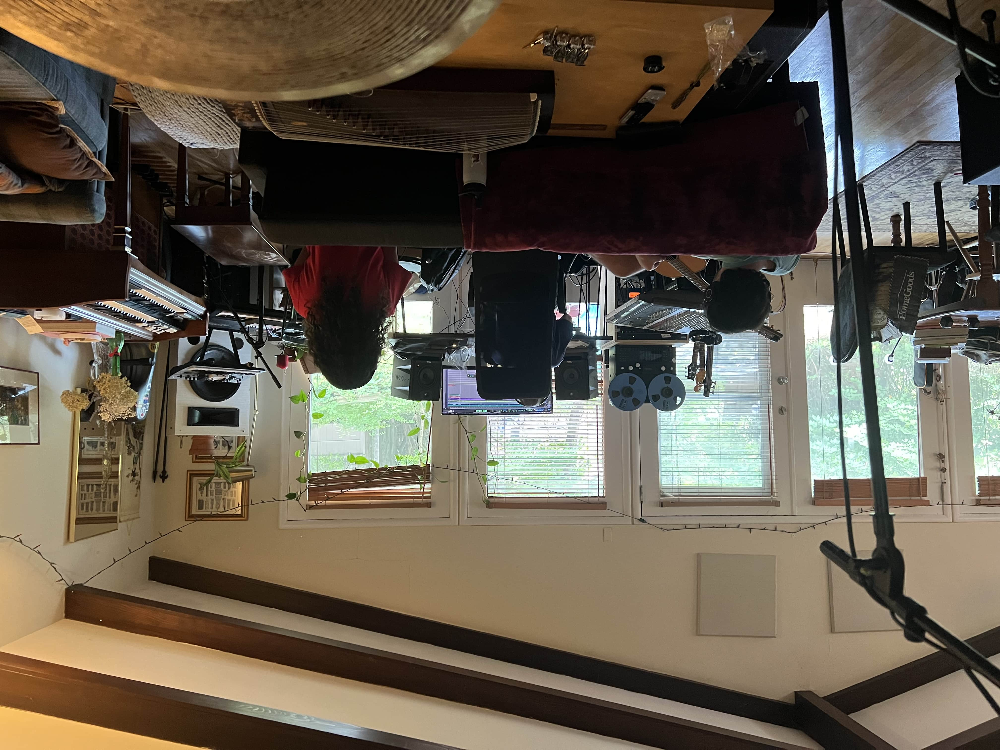
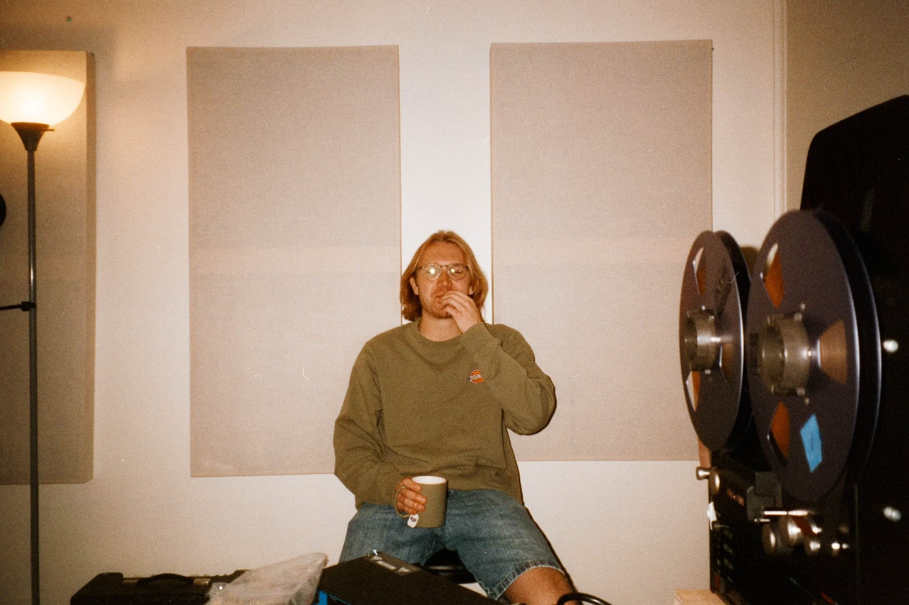